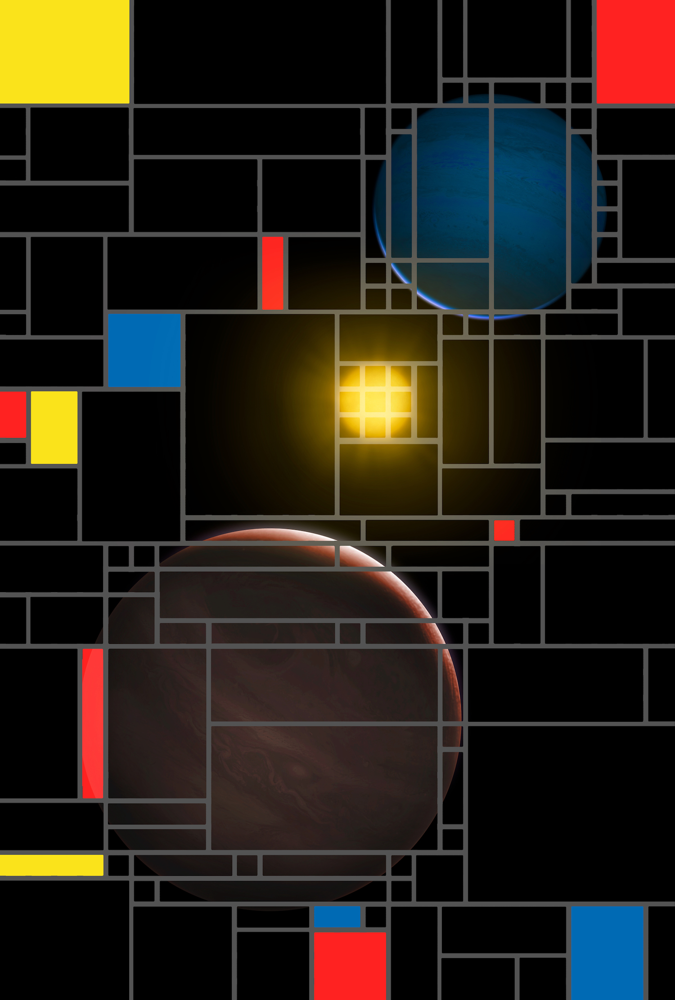

Matthew Kenworthy's Research
This page lists all my current research activities, follow the links below to jump to the latest results.
- Direct Imaging of Exoplanets
- The Young Suns Exoplanet Survey (YSES)
- APP coronagraphs
- Phase Sorting Interferometry
- Exoring systems
- The J1407 exoring system
- The Beta Pictoris b ring project (bRing)
Direct Imaging of Exoplanets
Discovering and characterising alien worlds
The YSES 2 multiple exoplanet system interpreted in the style of Piet Mondrian by Mark Garlick.
The majority of planets outside our Solar System (exoplanets) have been detected indirectly - through the reflex motion on their parent star (radial velocity) or by the regular dimming as they pass between us and their star (transit).
My exoplanet research takes three approaches to directly imaging exoplanets around nearby stars - by finding the best target stars to carry out direct imaging searches, by minimising the glare of the parent star by using coronagraphs, and finally measuring and removing optical errors introduced by the telescope optics by using focal plane wavefront sensing.
YSES
The Young Suns Exoplanet Survey
My former graduate student Dr. Alex Bohn led a survey for directly imaged exoplanets using the VLT instrument SPHERE, which is called the Young Sun Exoplanet Survey (YSES). It consists of a sample of 70 young stars (around 14 to 17 Myr old) from the Sco-Cen association that were first identified by Eric Mamajek and Mark Pecaut. Instead of deep exposures of 60 to 90 minutes, we take 2 minute images in two filters per star. We then use RDI and PCA with all the other stars in the survey to build a reference PSF for our target star.
YSES 1b and 1c
Looking through the first set of second epoch images, Alex discovered our first exoplanet companion, YSES 1b, a 14 Jupiter mass companion around a 1.0 Solar mass star (Bohn et al. 2020a), and then whilst taking data to characterise YSES 1b, Alex discovered a more distant companion from YSES 1, and this is a 6 Jupiter mass exoplanet some 320au away from the star (Bohn et al. 2020b).

YSES 2
The YSES survey announced the discovery of a second directly imaged exoplanet system (Bohn et al. 2021), this time with a 6 Jupiter mass exoplanet with a projected orbit of 115au. What's interesting is that this was the second discovery when only a third of the stars have been observed for their second epoch observations, suggesting that we may well find more exoplanet systems in the rest of the survey.
A disk around Wray 15-788
One of the first discoveries from YSES was a circumstellar disk around the star Wray 15-788 (Bohn et al. 2019), showing detailed circumstellar structure and shadowing from the inner rings onto the outer rings. Future observations will constrain the nature of the ring material and the geometry of inner structures closer to the star.

The APP Coronagraph
Robust coronagraphy for large telescopes
The coronagraph was invented by Bernard Lyot in 1930 to enable observations of the Sun's outer atmosphere. The faintly glowing extended gas in the sun's corona was only visible during a Solar eclipse by the Moon, and Lyot wanted to carry out observations without waiting years at a time.
The optical layout of his Lyot coronagraph is shown below:
The telescope focuses light from both the star and the planet at the Focal Plane (FP), where a mask then blocks out light from the star, but the planet (which is in a slightly different place on the sky) is not blocked by the mask. A lens takes the light from the FP and forms a Pupil Plane (PP). Here, the planet's pupil is an even disk of light, but for the star, the presence of the metal disk in the FP causes light to be redistributed into a series of bright rings. A mask with a diameter smaller than the full telescope pupil image diameter, called the Lyot stop, then blocks most of this scattered star light, but at a cost of blocking some of the planet light as well. A second lens then reimages the pupil to form the final sky image on the detector.
The Lyot coronagraph is simple, but it has several disadvantages: (i) If the star image is not kept centred on the metal disk, starlight "leaks" around the edge of the disk and into the rest of the coronagraph, increasing unwanted light and decreasing the overall signal to noise at the location of the planet. (ii) The Lyot stop blocks the outer edge of the telescope pupil, reducing the angular resolution of the telescope - the planet image gets larger in diameter, and (iii) the total throughput of the coronagraph decreases due to the Lyot stop's smaller diameter, and there is a trade-off between throughput and contrast.
Many coronagraphs are sensitive to pointing errors, and so require fast closed tip-tilt loops to ensure that the target star stays in the same position in the FP and so that the suppression works. By designing an optic that modifies only the phase in a pupil plane of a telescope, we remove this constraint. This Phase Apodization Coronagraphy (Codona and Angel 2004) is realised in the form of an Apodizing Phase Plate (APP) (Kenworthy et al. 2007) coronagraph:
By having no FP mask, there is no spurious diffraction in the PP. Instead there is the APP Coronagraph, which modifies the point spread function (PSF) of all objects in the field of view of the coronagraph.
The APP is a very simple coronagraph consisting of just one optic: it is completely insensitive to vibrations in the telescope and the AO system tip-tilt correction, and the phase pattern is a smoothly varying function of position, with no discontinuities or vortex singularities.
The suppression in the dark zone, the Inner Working Angle and the encircled energy transmission are inter-related, and have to be traded off against each other. For most designs we keep 60 to 70% of the encircled energy within the Airy disk of the PSF.
The original APP coronagraph introduced phase variations in the wavefront using differing Optical Path Differences (OPDs) of Zinc Selenide, realised by varying the thickness of the optic over the region of the telescope pupil. Since this is an inherently chromatic process, it restricted the bandwidth of the APP.
Panchratam phase can be introduced using the fast axis orientation of a birefringent liquid crystal, which then introduces a phase retardance depending on the orientation of the fast axis. Working with Michael Escuti at NCSU, we can then realise complex phase patterns that are not possible using the diamond turned Zinc Selenide technique.
The liquid crystal layers are still chromatic, but multiple layers of liquid crystal can be added on top of each other and the layers align themselves automatically, building up a more achromatic sandwich. Typically three layers will make a coronagraph that works over 100% of the total bandwidth.
The prototype vector APP (vAPP) coronagraph was tested at optical wavelengths in the laboratory at Leiden observatory, demonstrating its performance over a 50% bandwidth with two layers in Otten et al. (2014).
By using a combination of quarter wave retarder and Wollaston prism, two simultaneous PSFs with complementary dark holes are produced, along with the broadband performance, making this a highly robust coronagraph for exoplanet detection and characterization.
The addition of a phase ramp in the APP phase pattern causes the two APP PSFs to split, with an additional third non-coronagraphic PSF appearing between the two. This PSF is called the leakage term, and is due to any deviations in performance from the liquid crystal layers acting as a half-wave plate. This optic therefore does not require any quarter wave plates or Wollaston prism, and is therefore very simple to install in any exoplanet camera.
We now build grating vector APPs (gvAPPs) for many large telescopes around the world, designed by Emiel Por, David Doelman, and Christoph Keller. A comprehensive overview of all gvAPP and other liguid crystal coronagraphs is given in Doelman et al. (2021).
Phase Sorting Interferometry
Several methods have been developed to estimate the point spread function (PSF) using the science camera images themselves, notably Angular Differential Imaging (ADI), Spectral Differential Imaging (SDI), Locally Optimized Combination of Images (LOCI), Principal Component Analysis (PCA), and combinations of all the above.
Johanan Codona and I developed a method for estimating the Science camera PSF directly using the Wavefront Sensor Camera telemetry on ground-based adaptive optics systems. It is called Phase Sorting Interferometry (PSI) and is described in Codona and Kenworthy (2013). In this paper we demonstrate on-sky measurement of the PSF at the science camera, and also derive several measures of the atmospheric turbulence.
We are implementing PSI for the ERIS camera and it is considered as the baseline focal plane wavefront sensing method for the ELT instrument METIS.
Exorings
Searching for ring systems in transit
Planets condense from giant disks of gas and dust orbiting their parent star, and in the process, they form smaller circumplanetary disks of material themselves. There is a brief period of time when moons start to form in this circumplanetary disk, carving out ring-like gaps. These huge structures can be seen casting shadows across the Galaxy, and we are beginning to detect these systems. We are now searching for a system that has eclipsed two or more times before, so that we can plan detailed observations during the next eclipse.
Our initial discovery was the giant ring system seen towards the young star J1407, and we built a dedicated observatory called bRing to look for circumplanetary material towards the young exoplanet Beta Pictoris b. My graduate student Dirk van Dam is searching archival data looking for the tell-tale signatures of more transiting ring systems.
The J1407 exoring system
J1407 is a nearby young star that underwent a complex series of eclipses that lasted for almost two months in 2007. Our best explanation is that an (as yet) unseen massive substellar companion with a giant ring system passed in front of the star, causing the eclipse. We haven't seen another eclipse towards J1407 (or its full name, 1SWASP J140747.93-394542.6), but data from the ALMA telescope array has detected what might be the dust making up the rings themselves.
Download the J1407b ring animation.
Travel poster for J1407 by Mark Garlick and you can buy a poster.
We now give a brief history of what we've done since the discovery was announced in 2012.
Mark Pecaut, a then graduate student under the supervision of Eric Mamajek at the University of Rochester, discovered the unusual light curve towards the end of 2011. Mark was looking at the light curves of young stars as part of his thesis research. It is difficult to determine the ages of most stars, so several different pieces of evidence are needed to confirm a young star. Looking through the public light curve database of the SuperWASP collaboration, he found 1SWASP J140747.93-394542.6, a star almost the same mass as the Sun, with a light curve that showed a 3% variability that repeated every 3.2 days, almost certianly due to fainter star spots on the surface of the star rotating in and out of view as the star rotated.
J1407 showed a very long lasting eclipse event from April through May 2007, where the star's changed brightness on a nightly basis, sometimes as much as 95% of the flux was blocked by something moving in front of the star. The discovery paper (Mamajek 2012) contained a simple model including four large rings about 0.6 au in diameter surrounding an unseen substellar companion, called J1407b, which orbited around the parent star.
Follow up observations were carried out to try and detect J1407b, which must be several tens of Jupiters in mass in order to keep such a large ring system held together and not ripped apart by the gravity of the star. These included looking for another eclipse in other photometric data (no other eclipses were found), looking for the reflex motion of the star as the gravity of the unseen companion tugged on it (the star is young and is very active, preventing the method from being sensitive enough), and directly detecting the thermal glow of the companion itself (no - even with the largest telescopes and an optical trick called sparse aperture masking we did not see anything).
All these non-detections were still useful, since they allowed us to rule out possible orbits and masses for J1407b, detailed in Kenworthy et al. 2015.
One interesting conclusion we had was that there were no circular orbits for J1407b since we needed to explain why the ring system seemed to be either very big or moving very fast in front of the star, implying that it was in an orbit close to the star. This presented one big problem: our ring system seemed to now be very large indeed, so large that the rings would spill away from J1407b and fall towards the star. Putting J1407b on an elliptical orbit seemed to make the problem even worse.
This inspired Steven Reider to simulate a ring system around a planet that itself was in an elliptical orbit around the star J1407. The new trick was one of a simple spin - if the rings were added so that they span around J1407b in the same direction that the planet orbited around the star (called prograde motion) then the rings fell apart within a few orbits when the planet passed close to the star.
New York Times front page with the results from Rieder and Kenworthy competing with some bloke who won a Nobel Prize. (2016 October 13).
However, if the rings were spinning in the opposite direction (a retrograde motion) then the rings held together for a much longer time, so much so that we could find possible masses for J1407b and orbital periods that would work!
Even if these orbits worked, then another problem presented itself, in that the rings were tilted with respect to the orbital plane of the planet. Most planets rotate, and the centripetal force generated by this rotation causes the planets to bulge out along their equators, distorting them from ideal spheres into oblate spheroids (M&M or Smarties if you like candy/sweeties). This deviation from an ideal sphere means that any ring system orbiting around the planet will tend to align with the plane of the equator, as is the case with Saturn. Since J1407b is younger and more massive than Jupiter, the bulge around the equator is proportionally much bigger, marshalling the rings into this plane.
The rings of J1407b are about 200 times larger than Saturn's rings, and for the rings a long way away from the planet, the tidal forces of the star J1407 will force them down into the orbital plane of J1407b, some 20 degrees away. The rings should no longer be flat, but have a large systematic warp to them, as calculated by Zanazzi et al. in 2017.
Photographs of the night sky have been taken for over a century, and one of the largest collections is at Harvard University. These photographic plates are being scanned in digitally and published onto the internet through the DASCH project. The process is slow and time consuming, especially as you work towards the Galactic plane, where there are far more stars crowded together and disentangling the signals is challenging, but they reached the location in the Galaxy where J1407 is located around 2017. This enabled the baseline for the J1407 lightcurve to be extended back to the 1900's, but still no eclipses were detected. The coverage of the photographic plates from DASCH were combined with others from Sonneborg and other more recent all sky surveys that looked towards J1407, but still a null result, written up in Mentel et al. 2018.
Meanwhile, the star is being observed every clear night by the dedicated observers of the AAVSO. They watch J1407 for when the next eclipse will start. The constraints they provide rule out successively more obital periods, leaving J1407b with fewer orbital periods to hide in.
If the planet J1407b could not be detected, then how about looking for the rings directly?
The rings are probably made of small rock or icy particles, ranging from one micron in size up to rocks and boulders. The surface area of the dust in the rings is vast, so much so that they radiate thermal energy at millimetere wavelengths that can be detected with radio telescopes on the Earth. The most sensitive sub-millimetre telescope is the Atacama Large Millimetre Array (ALMA) in the Atacama desert in Chile. We were able to get observing time on this array of telescopes in the Summer of 2018, and to our surprise we detected a sub-mm source with the brightness we predicted for J1407b's rings.
After our initial joy, we then became confused again - because the ALMA source wasn't exactly in the same position as the location of the star. At these very long wavelengths, the star J1407 is not visible in ALMA, so we had to calculated the expected location of the star and compare it to the ALMA source. If the source is the same physical object that caused the eclipse in 2007, we run into a big problem - the source cannot be in a gravitaionally bound orbit around J1407.... but there's an very unlikely alternative explanation - that the object we called J1407b is floating freely through the Galaxy, and just happened to pass in front of a very young star.
This is very very unlikely to happen, but there's a first time for everything.... and to confirm this tantalizing idea, we need another image from the ALMA array. And as of 2020, we have not been able to get the observing time to confirm or deny our latest idea. If this happens to be true, though, then we will never see another eclipse of J1407.
So that is the latest and greatest information about J1407 and the ring system around J1407b. We still think that the eclipse in 2007 was caused by something orbiting J1407, and that one day we will see another eclipse that will confirm the incomplete light curve from 2007. Once we see that eclipse, all the geometry of the ring system is solved almost immediately. Until then, we tide ourselves over and patiently wait for a triggering signal from an observer who says "This star has started fading again!"
The first papers on the J1407b system:
- Paper I - Mamajek, Pecault, Quillen et al. (2012) The discovery of the eclipses.
- Paper II - van Werkhoven, Kenworthy and Mamajek (2014) Improving the photometry of the eclipse
- Paper III - Kenworthy et al. (2015) The search for the companion J1407b
- Paper IV - Kenworthy and Mamajek (2015) Modeling the giant exorings around J1407b
- Paper V - Rieder and Kenworthy (2016) Constraints on the size and dynamics of the J1407b ring system
The Beta Pictoris b ring project (bRing)
Looking at one star continuously for over one year
In 2017 and the start of 2018, the circumplanetary environment of the gas giant exoplanet Beta Pictoris b crossed in front of the bright young star Beta Pictoris, a naked eye 4th magnitude star in the Southern skies. We wanted to see if any circumplanetary material crossed in front of the star over this 300 day period, and so I started the bRing project.
The Beta Pictoris b ring (bRing) project are two small robotic observatories in South Africa and Australia, each one consists of two telephoto lenses with support computers so that we can continuously monitor the path of Beta Pictoris across the Southern skies. The design builds on the heritage gained in Leiden from the MASCARA all sky survey camera units. To get longitudinal coverage, two separate bRing cameras were built (one by Leiden Observatory for South Africa and one by University of Rochester for Australia) and the data is combined with MASCARA South to provide redundant photometric coverage. The photometric precision is 0.5% with 5 minutes of data.
The project successfully monitored the Hill sphere transit of Beta Pictoris b and the results (an upper limit to the amount of dust and an absence of rings) is published in Kenworthy et al. (2021).
Last updated around April 2022.